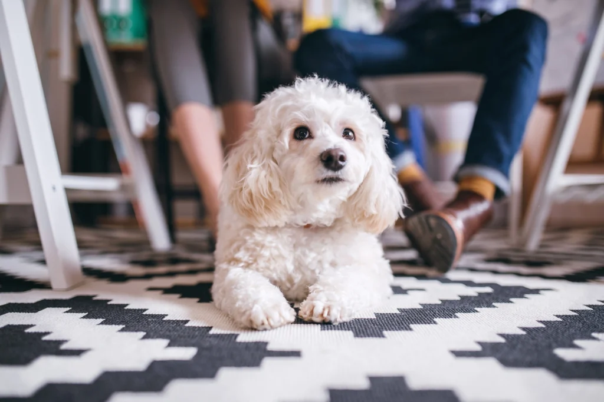

TODO: Transforme o texto "Voltar" abaixo em hiperlink que leva o usuário para a página com o sumário de todos os cachorros
Voltar
O Poodle é bastante procurado por quem mora em apartmento e conquista diversas famílias com sua personalidade dócil, inteligente e simpática. Ele também é uma das raças de cachorro que solta poucos pelos e não provoca alergias.